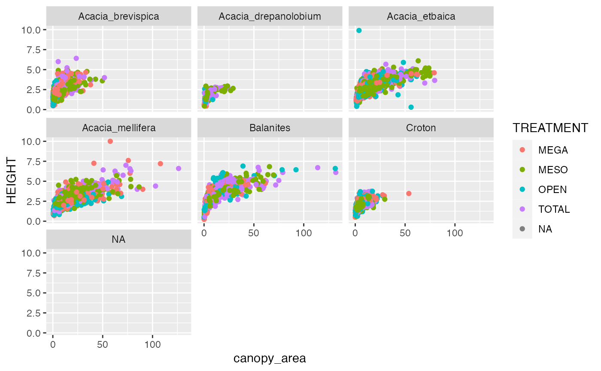
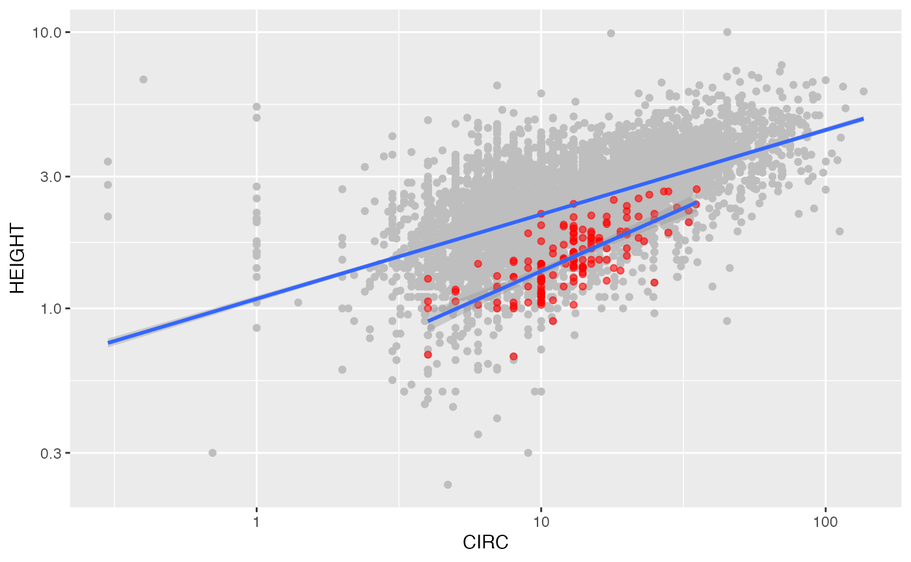

intro
intro.RmdExercise 3
Read the data
trees <- read_tsv(file = "../data-raw/TREE_SURVEYS.txt")## Rows: 7508 Columns: 16
## ── Column specification ────────────────────────────────────────────────────────
## Delimiter: "\t"
## chr (9): SITE, TREATMENT, PLOT, SPECIES, DEAD, HEIGHT, AXIS_2, MEASUREMENT, ...
## dbl (7): SURVEY, YEAR, BLOCK, ORIGINAL_TAG, NEW_TAG, AXIS_1, CIRC
##
## ℹ Use `spec()` to retrieve the full column specification for this data.
## ℹ Specify the column types or set `show_col_types = FALSE` to quiet this message.
head(trees)## # A tibble: 6 × 16
## SURVEY YEAR SITE TREATMENT BLOCK PLOT SPECIES ORIGI…¹ NEW_TAG DEAD HEIGHT
## <dbl> <dbl> <chr> <chr> <dbl> <chr> <chr> <dbl> <dbl> <chr> <chr>
## 1 1 2009 SOUTH TOTAL 2 S2TOT… Acacia… 1 NA N 3.4
## 2 2 2010 SOUTH TOTAL 2 S2TOT… Acacia… 1 NA N 3.32
## 3 3 2011 SOUTH TOTAL 2 S2TOT… Acacia… 1 NA N 3.65
## 4 4 2012 SOUTH TOTAL 2 S2TOT… Acacia… 1 NA N 3.74
## 5 5 2013 SOUTH TOTAL 2 S2TOT… Acacia… 1 NA N 3.59
## 6 1 2009 SOUTH TOTAL 2 S2TOT… Acacia… 2 NA N 2.3
## # … with 5 more variables: AXIS_1 <dbl>, AXIS_2 <chr>, CIRC <dbl>,
## # MEASUREMENT <chr>, STEMS <chr>, and abbreviated variable name ¹ORIGINAL_TAGQuality assurance
After visually inspecting the variables, it looks like height is character type and it should be numeric
str(trees)## spc_tbl_ [7,508 × 16] (S3: spec_tbl_df/tbl_df/tbl/data.frame)
## $ SURVEY : num [1:7508] 1 2 3 4 5 1 2 3 4 5 ...
## $ YEAR : num [1:7508] 2009 2010 2011 2012 2013 ...
## $ SITE : chr [1:7508] "SOUTH" "SOUTH" "SOUTH" "SOUTH" ...
## $ TREATMENT : chr [1:7508] "TOTAL" "TOTAL" "TOTAL" "TOTAL" ...
## $ BLOCK : num [1:7508] 2 2 2 2 2 2 2 2 2 2 ...
## $ PLOT : chr [1:7508] "S2TOTAL" "S2TOTAL" "S2TOTAL" "S2TOTAL" ...
## $ SPECIES : chr [1:7508] "Acacia_etbaica" "Acacia_etbaica" "Acacia_etbaica" "Acacia_etbaica" ...
## $ ORIGINAL_TAG: num [1:7508] 1 1 1 1 1 2 2 2 2 2 ...
## $ NEW_TAG : num [1:7508] NA NA NA NA NA NA NA NA NA NA ...
## $ DEAD : chr [1:7508] "N" "N" "N" "N" ...
## $ HEIGHT : chr [1:7508] "3.4" "3.32" "3.65" "3.74" ...
## $ AXIS_1 : num [1:7508] 6.1 8.25 8.85 5.5 5 2.2 2.75 3.3 NA 3.7 ...
## $ AXIS_2 : chr [1:7508] "5" "8.45" "9" "7.1" ...
## $ CIRC : num [1:7508] 37.8 18.8 57 60 55 14.2 18.4 25 NA 31 ...
## $ MEASUREMENT : chr [1:7508] "D" "D" "C" "C" ...
## $ STEMS : chr [1:7508] "1" "1" "1" "1" ...
## - attr(*, "spec")=
## .. cols(
## .. SURVEY = col_double(),
## .. YEAR = col_double(),
## .. SITE = col_character(),
## .. TREATMENT = col_character(),
## .. BLOCK = col_double(),
## .. PLOT = col_character(),
## .. SPECIES = col_character(),
## .. ORIGINAL_TAG = col_double(),
## .. NEW_TAG = col_double(),
## .. DEAD = col_character(),
## .. HEIGHT = col_character(),
## .. AXIS_1 = col_double(),
## .. AXIS_2 = col_character(),
## .. CIRC = col_double(),
## .. MEASUREMENT = col_character(),
## .. STEMS = col_character()
## .. )
## - attr(*, "problems")=<externalptr>
head(trees$HEIGHT)## [1] "3.4" "3.32" "3.65" "3.74" "3.59" "2.3"
trees$HEIGHT <- as.numeric(trees$HEIGHT)## Warning: NAs introduced by coercion
head(trees)## # A tibble: 6 × 16
## SURVEY YEAR SITE TREATMENT BLOCK PLOT SPECIES ORIGI…¹ NEW_TAG DEAD HEIGHT
## <dbl> <dbl> <chr> <chr> <dbl> <chr> <chr> <dbl> <dbl> <chr> <dbl>
## 1 1 2009 SOUTH TOTAL 2 S2TOT… Acacia… 1 NA N 3.4
## 2 2 2010 SOUTH TOTAL 2 S2TOT… Acacia… 1 NA N 3.32
## 3 3 2011 SOUTH TOTAL 2 S2TOT… Acacia… 1 NA N 3.65
## 4 4 2012 SOUTH TOTAL 2 S2TOT… Acacia… 1 NA N 3.74
## 5 5 2013 SOUTH TOTAL 2 S2TOT… Acacia… 1 NA N 3.59
## 6 1 2009 SOUTH TOTAL 2 S2TOT… Acacia… 2 NA N 2.3
## # … with 5 more variables: AXIS_1 <dbl>, AXIS_2 <chr>, CIRC <dbl>,
## # MEASUREMENT <chr>, STEMS <chr>, and abbreviated variable name ¹ORIGINAL_TAGAlternatively, we can force variables to be assigned a specific type when we read them:
trees <- read_tsv("../data-raw/TREE_SURVEYS.txt",
col_types = list(HEIGHT = col_double(),
AXIS_2 = col_double()))## Warning: One or more parsing issues, call `problems()` on your data frame for details,
## e.g.:
## dat <- vroom(...)
## problems(dat)
canopy_area <- trees$AXIS_1 * trees$AXIS_2
head(trees)## # A tibble: 6 × 16
## SURVEY YEAR SITE TREATMENT BLOCK PLOT SPECIES ORIGI…¹ NEW_TAG DEAD HEIGHT
## <dbl> <dbl> <chr> <chr> <dbl> <chr> <chr> <dbl> <dbl> <chr> <dbl>
## 1 1 2009 SOUTH TOTAL 2 S2TOT… Acacia… 1 NA N 3.4
## 2 2 2010 SOUTH TOTAL 2 S2TOT… Acacia… 1 NA N 3.32
## 3 3 2011 SOUTH TOTAL 2 S2TOT… Acacia… 1 NA N 3.65
## 4 4 2012 SOUTH TOTAL 2 S2TOT… Acacia… 1 NA N 3.74
## 5 5 2013 SOUTH TOTAL 2 S2TOT… Acacia… 1 NA N 3.59
## 6 1 2009 SOUTH TOTAL 2 S2TOT… Acacia… 2 NA N 2.3
## # … with 5 more variables: AXIS_1 <dbl>, AXIS_2 <dbl>, CIRC <dbl>,
## # MEASUREMENT <chr>, STEMS <chr>, and abbreviated variable name ¹ORIGINAL_TAG
trees$canopy_area <- canopy_area
trees$area <- canopy_area
numbers <- -10:10
letters[-4]## [1] "a" "b" "c" "e" "f" "g" "h" "i" "j" "k" "l" "m" "n" "o" "p" "q" "r" "s" "t"
## [20] "u" "v" "w" "x" "y" "z"
numbers[c(1:3,5:10)]## [1] -10 -9 -8 -6 -5 -4 -3 -2 -1
numbers[-4]## [1] -10 -9 -8 -6 -5 -4 -3 -2 -1 0 1 2 3 4 5 6 7 8 9
## [20] 10
trees[1:3,-(5:10)]## # A tibble: 3 × 12
## SURVEY YEAR SITE TREATMENT HEIGHT AXIS_1 AXIS_2 CIRC MEASUR…¹ STEMS canop…²
## <dbl> <dbl> <chr> <chr> <dbl> <dbl> <dbl> <dbl> <chr> <chr> <dbl>
## 1 1 2009 SOUTH TOTAL 3.4 6.1 5 37.8 D 1 30.5
## 2 2 2010 SOUTH TOTAL 3.32 8.25 8.45 18.8 D 1 69.7
## 3 3 2011 SOUTH TOTAL 3.65 8.85 9 57 C 1 79.6
## # … with 1 more variable: area <dbl>, and abbreviated variable names
## # ¹MEASUREMENT, ²canopy_area
trees## # A tibble: 7,508 × 18
## SURVEY YEAR SITE TREATMENT BLOCK PLOT SPECIES ORIGI…¹ NEW_TAG DEAD HEIGHT
## <dbl> <dbl> <chr> <chr> <dbl> <chr> <chr> <dbl> <dbl> <chr> <dbl>
## 1 1 2009 SOUTH TOTAL 2 S2TO… Acacia… 1 NA N 3.4
## 2 2 2010 SOUTH TOTAL 2 S2TO… Acacia… 1 NA N 3.32
## 3 3 2011 SOUTH TOTAL 2 S2TO… Acacia… 1 NA N 3.65
## 4 4 2012 SOUTH TOTAL 2 S2TO… Acacia… 1 NA N 3.74
## 5 5 2013 SOUTH TOTAL 2 S2TO… Acacia… 1 NA N 3.59
## 6 1 2009 SOUTH TOTAL 2 S2TO… Acacia… 2 NA N 2.3
## 7 2 2010 SOUTH TOTAL 2 S2TO… Acacia… 2 NA N 2.32
## 8 3 2011 SOUTH TOTAL 2 S2TO… Acacia… 2 NA N 2.75
## 9 4 2012 SOUTH TOTAL 2 S2TO… Acacia… 2 NA Y NA
## 10 5 2013 SOUTH TOTAL 2 S2TO… Acacia… 2 NA N 2.86
## # … with 7,498 more rows, 7 more variables: AXIS_1 <dbl>, AXIS_2 <dbl>,
## # CIRC <dbl>, MEASUREMENT <chr>, STEMS <chr>, canopy_area <dbl>, area <dbl>,
## # and abbreviated variable name ¹ORIGINAL_TAGCreate a subset of the trees data frame with just the
SURVEY, YEAR, SITE, and
canopy_area columns:
## tibble [7,508 × 4] (S3: tbl_df/tbl/data.frame)
## $ SURVEY : num [1:7508] 1 2 3 4 5 1 2 3 4 5 ...
## $ YEAR : num [1:7508] 2009 2010 2011 2012 2013 ...
## $ SITE : chr [1:7508] "SOUTH" "SOUTH" "SOUTH" "SOUTH" ...
## $ canopy_area: num [1:7508] 30.5 69.7 79.6 39 40.8 ...
trees_test <- data.frame(SURVEY = trees$SURVEY,
YEAR = trees$YEAR,
SITE = trees$SITE,
canopy_area = trees$canopy_area)
str(trees_test)## 'data.frame': 7508 obs. of 4 variables:
## $ SURVEY : num 1 2 3 4 5 1 2 3 4 5 ...
## $ YEAR : num 2009 2010 2011 2012 2013 ...
## $ SITE : chr "SOUTH" "SOUTH" "SOUTH" "SOUTH" ...
## $ canopy_area: num 30.5 69.7 79.6 39 40.8 ...## tibble [7,508 × 4] (S3: tbl_df/tbl/data.frame)
## $ SURVEY : num [1:7508] 1 2 3 4 5 1 2 3 4 5 ...
## $ YEAR : num [1:7508] 2009 2010 2011 2012 2013 ...
## $ SITE : chr [1:7508] "SOUTH" "SOUTH" "SOUTH" "SOUTH" ...
## $ canopy_area: num [1:7508] 30.5 69.7 79.6 39 40.8 ...Make a scatter plot with canopy_area on the x axis and
HEIGHT on the y axis. Color the points by
TREATMENT and create a subplot per species uding the
function facet_wrap(). This will plot the points for each
variable in the SPECIES column in a separate subplot. Label
the x axis “Canopy Area (m)” and the y axis
“Height (m)”. Make the point size 2.
ggplot(data = trees, mapping = aes(x = canopy_area, y = HEIGHT, color = TREATMENT)) +
geom_point() +
labs(x = "Canopy area") +
facet_wrap(~SPECIES) ## Warning: Removed 215 rows containing missing values (`geom_point()`).That’s a big outlier in the plot from (2). 50 by 50 meters is a little too big for a real acacia tree, so filter the data to remove any values for AXIS_1 and AXIS_2 that are over 20 and update the data frame. Then, remake the graph.
# we can do this with the subset function
trees3 <- subset(trees, canopy_area <= 400)
# which(is.na(trees4$TREATMENT))
# OR finding the actual value that is the outlier
which(trees$canopy_area > 200)## [1] 3839
trees[3839,]## # A tibble: 1 × 18
## SURVEY YEAR SITE TREATM…¹ BLOCK PLOT SPECIES ORIGI…² NEW_TAG DEAD HEIGHT
## <dbl> <dbl> <chr> <chr> <dbl> <chr> <chr> <dbl> <dbl> <chr> <dbl>
## 1 5 2013 CENTRAL MEGA 2 C2ME… Acacia… 1941 NA N 2.49
## # … with 7 more variables: AXIS_1 <dbl>, AXIS_2 <dbl>, CIRC <dbl>,
## # MEASUREMENT <chr>, STEMS <chr>, canopy_area <dbl>, area <dbl>, and
## # abbreviated variable names ¹TREATMENT, ²ORIGINAL_TAG
trees4 <- trees[-3839,]
# n <- which(is.na(trees4$TREATMENT))
# trees4[n,]The two tables are the same:
ggplot(data = trees3, mapping = aes(x = canopy_area, y = HEIGHT, color = TREATMENT)) +
geom_point() +
facet_wrap(~SPECIES)
ggplot(data = trees4, mapping = aes(x = canopy_area, y = HEIGHT, color = TREATMENT)) +
geom_point() +
facet_wrap(~SPECIES)## Warning: Removed 215 rows containing missing values (`geom_point()`).
Final plot:
ggplot(data = trees3, mapping = aes(x = canopy_area, y = HEIGHT, color = TREATMENT)) +
geom_point() +
scale_x_log10() +
scale_y_log10() +
facet_wrap(~SPECIES) +
geom_smooth() +
labs(x = "Canopy area", y = "Tree height")## Warning: Transformation introduced infinite values in continuous x-axis
## Transformation introduced infinite values in continuous x-axis## `geom_smooth()` using method = 'loess' and formula = 'y ~ x'## Warning: Removed 1 rows containing non-finite values (`stat_smooth()`).Exercise 4
We want to compare the circumference to height relationship in acacia to the same relationship for all trees in the region. These data are stored in two different tables.
One data set is in the file “ACACIA_DREPANOLOBIUM_SURVEY.txt” The other data set is in “TREE_SURVEYS.txt”.
First we load both data sets:
# make sure to provide file name as relative path
read.csv(file = "../data-raw/ACACIA_DREPANOLOBIUM_SURVEY.txt",
sep = "\t",
na.strings = "dead") -> acacia
trees <- read_tsv("../data-raw/TREE_SURVEYS.txt",
col_types = list(HEIGHT = col_double(),
AXIS_2 = col_double()))## Warning: One or more parsing issues, call `problems()` on your data frame for details,
## e.g.:
## dat <- vroom(...)
## problems(dat)Visual quality assurance and control with the function str()
str(acacia)## 'data.frame': 157 obs. of 15 variables:
## $ SURVEY : int 1 1 1 1 1 1 1 1 1 1 ...
## $ YEAR : int 2012 2012 2012 2012 2012 2012 2012 2012 2012 2012 ...
## $ SITE : chr "SOUTH" "SOUTH" "SOUTH" "SOUTH" ...
## $ BLOCK : int 1 1 1 1 1 1 1 1 1 1 ...
## $ TREATMENT: chr "TOTAL" "TOTAL" "TOTAL" "TOTAL" ...
## $ PLOT : chr "S1TOTAL" "S1TOTAL" "S1TOTAL" "S1TOTAL" ...
## $ ID : int 581 582 3111 3112 3113 3114 3115 3199 941 942 ...
## $ HEIGHT : num 2.25 2.65 1.5 2.01 1.75 1.65 1.2 1.45 1.87 2.38 ...
## $ AXIS1 : num 2.75 4.1 1.7 1.8 1.84 1.62 1.95 2 2.15 5.55 ...
## $ AXIS2 : num 2.15 3.9 0.85 1.6 1.42 0.85 0.9 1.75 1.82 4.82 ...
## $ CIRC : num 20 28 17 12 13 15 9 12.2 13 35 ...
## $ FLOWERS : int 0 0 2 0 0 0 0 0 0 0 ...
## $ BUDS : int 0 0 1 0 0 0 0 0 0 0 ...
## $ FRUITS : int 10 150 50 75 20 0 0 25 0 50 ...
## $ ANT : chr "CS" "TP" "TP" "CS" ...
is.numeric(acacia$CIRC)## [1] TRUE
is.numeric(acacia$HEIGHT)## [1] TRUE
str(trees)## spc_tbl_ [7,508 × 16] (S3: spec_tbl_df/tbl_df/tbl/data.frame)
## $ SURVEY : num [1:7508] 1 2 3 4 5 1 2 3 4 5 ...
## $ YEAR : num [1:7508] 2009 2010 2011 2012 2013 ...
## $ SITE : chr [1:7508] "SOUTH" "SOUTH" "SOUTH" "SOUTH" ...
## $ TREATMENT : chr [1:7508] "TOTAL" "TOTAL" "TOTAL" "TOTAL" ...
## $ BLOCK : num [1:7508] 2 2 2 2 2 2 2 2 2 2 ...
## $ PLOT : chr [1:7508] "S2TOTAL" "S2TOTAL" "S2TOTAL" "S2TOTAL" ...
## $ SPECIES : chr [1:7508] "Acacia_etbaica" "Acacia_etbaica" "Acacia_etbaica" "Acacia_etbaica" ...
## $ ORIGINAL_TAG: num [1:7508] 1 1 1 1 1 2 2 2 2 2 ...
## $ NEW_TAG : num [1:7508] NA NA NA NA NA NA NA NA NA NA ...
## $ DEAD : chr [1:7508] "N" "N" "N" "N" ...
## $ HEIGHT : num [1:7508] 3.4 3.32 3.65 3.74 3.59 2.3 2.32 2.75 NA 2.86 ...
## $ AXIS_1 : num [1:7508] 6.1 8.25 8.85 5.5 5 2.2 2.75 3.3 NA 3.7 ...
## $ AXIS_2 : num [1:7508] 5 8.45 9 7.1 8.15 2.8 2.65 3.8 NA 2.6 ...
## $ CIRC : num [1:7508] 37.8 18.8 57 60 55 14.2 18.4 25 NA 31 ...
## $ MEASUREMENT : chr [1:7508] "D" "D" "C" "C" ...
## $ STEMS : chr [1:7508] "1" "1" "1" "1" ...
## - attr(*, "spec")=
## .. cols(
## .. SURVEY = col_double(),
## .. YEAR = col_double(),
## .. SITE = col_character(),
## .. TREATMENT = col_character(),
## .. BLOCK = col_double(),
## .. PLOT = col_character(),
## .. SPECIES = col_character(),
## .. ORIGINAL_TAG = col_double(),
## .. NEW_TAG = col_double(),
## .. DEAD = col_character(),
## .. HEIGHT = col_double(),
## .. AXIS_1 = col_double(),
## .. AXIS_2 = col_double(),
## .. CIRC = col_double(),
## .. MEASUREMENT = col_character(),
## .. STEMS = col_character()
## .. )
## - attr(*, "problems")=<externalptr>
is.numeric(trees$CIRC)## [1] TRUE
is.numeric(trees$HEIGHT)## [1] TRUEMake a graph with the relationship between CIRC and HEIGHT for all trees as gray circles in the background and the same relationship for acacia as red circles plotted on top of the gray circles.
ggplot() +
geom_point(data = trees, mapping = aes(x = CIRC, y = HEIGHT), color = "gray", alpha = 0.5) +
geom_point(data = acacia, mapping = aes(x = CIRC, y = HEIGHT), color = "red", alpha = 0.6)## Warning: Removed 414 rows containing missing values (`geom_point()`).## Warning: Removed 4 rows containing missing values (`geom_point()`).
ggplot(data = trees, mapping = aes(x = CIRC, y = HEIGHT), color = "gray", alpha = 0.5) +
geom_point(color = "gray") +
geom_point(data = acacia, mapping = aes(x = CIRC, y = HEIGHT), color = "red", alpha = 0.6) +
geom_smooth() +
geom_smooth(data = acacia, mapping = aes(x = CIRC, y = HEIGHT))## `geom_smooth()` using method = 'gam' and formula = 'y ~ s(x, bs = "cs")'## Warning: Removed 414 rows containing non-finite values (`stat_smooth()`).## `geom_smooth()` using method = 'loess' and formula = 'y ~ x'## Warning: Removed 4 rows containing non-finite values (`stat_smooth()`).## Warning: Removed 414 rows containing missing values (`geom_point()`).## Warning: Removed 4 rows containing missing values (`geom_point()`).Scale both axes logarithmically. Include a linear model fitting for both sets of data, trying different linear models specified using the argument method =. Provide clear labels for the axes.
?geom_smooth
ggplot(data = trees, mapping = aes(x = CIRC, y = HEIGHT), color = "gray", alpha = 0.5) +
geom_point(color = "gray") +
geom_point(data = acacia, mapping = aes(x = CIRC, y = HEIGHT), color = "red", alpha = 0.6) +
scale_x_log10() +
scale_y_log10() +
geom_smooth(method = "lm") +
geom_smooth(data = acacia, mapping = aes(x = CIRC, y = HEIGHT), method = "lm")## `geom_smooth()` using formula = 'y ~ x'## Warning: Removed 414 rows containing non-finite values (`stat_smooth()`).## `geom_smooth()` using formula = 'y ~ x'## Warning: Removed 4 rows containing non-finite values (`stat_smooth()`).## Warning: Removed 414 rows containing missing values (`geom_point()`).## Warning: Removed 4 rows containing missing values (`geom_point()`).
str(trees)## spc_tbl_ [7,508 × 16] (S3: spec_tbl_df/tbl_df/tbl/data.frame)
## $ SURVEY : num [1:7508] 1 2 3 4 5 1 2 3 4 5 ...
## $ YEAR : num [1:7508] 2009 2010 2011 2012 2013 ...
## $ SITE : chr [1:7508] "SOUTH" "SOUTH" "SOUTH" "SOUTH" ...
## $ TREATMENT : chr [1:7508] "TOTAL" "TOTAL" "TOTAL" "TOTAL" ...
## $ BLOCK : num [1:7508] 2 2 2 2 2 2 2 2 2 2 ...
## $ PLOT : chr [1:7508] "S2TOTAL" "S2TOTAL" "S2TOTAL" "S2TOTAL" ...
## $ SPECIES : chr [1:7508] "Acacia_etbaica" "Acacia_etbaica" "Acacia_etbaica" "Acacia_etbaica" ...
## $ ORIGINAL_TAG: num [1:7508] 1 1 1 1 1 2 2 2 2 2 ...
## $ NEW_TAG : num [1:7508] NA NA NA NA NA NA NA NA NA NA ...
## $ DEAD : chr [1:7508] "N" "N" "N" "N" ...
## $ HEIGHT : num [1:7508] 3.4 3.32 3.65 3.74 3.59 2.3 2.32 2.75 NA 2.86 ...
## $ AXIS_1 : num [1:7508] 6.1 8.25 8.85 5.5 5 2.2 2.75 3.3 NA 3.7 ...
## $ AXIS_2 : num [1:7508] 5 8.45 9 7.1 8.15 2.8 2.65 3.8 NA 2.6 ...
## $ CIRC : num [1:7508] 37.8 18.8 57 60 55 14.2 18.4 25 NA 31 ...
## $ MEASUREMENT : chr [1:7508] "D" "D" "C" "C" ...
## $ STEMS : chr [1:7508] "1" "1" "1" "1" ...
## - attr(*, "spec")=
## .. cols(
## .. SURVEY = col_double(),
## .. YEAR = col_double(),
## .. SITE = col_character(),
## .. TREATMENT = col_character(),
## .. BLOCK = col_double(),
## .. PLOT = col_character(),
## .. SPECIES = col_character(),
## .. ORIGINAL_TAG = col_double(),
## .. NEW_TAG = col_double(),
## .. DEAD = col_character(),
## .. HEIGHT = col_double(),
## .. AXIS_1 = col_double(),
## .. AXIS_2 = col_double(),
## .. CIRC = col_double(),
## .. MEASUREMENT = col_character(),
## .. STEMS = col_character()
## .. )
## - attr(*, "problems")=<externalptr>
unique(trees$SPECIES)## [1] "Acacia_etbaica" "Acacia_mellifera" "Acacia_brevispica"
## [4] "Croton" "Balanites" "Acacia_drepanolobium"
## [7] NA
acacia_sub <- subset(trees, SPECIES == "Acacia_etbaica" | SPECIES == "Acacia_mellifera" | SPECIES == "Acacia_brevispica" | SPECIES == "Acacia_drepanolobium")
str(acacia_sub)## tibble [5,435 × 16] (S3: tbl_df/tbl/data.frame)
## $ SURVEY : num [1:5435] 1 2 3 4 5 1 2 3 4 5 ...
## $ YEAR : num [1:5435] 2009 2010 2011 2012 2013 ...
## $ SITE : chr [1:5435] "SOUTH" "SOUTH" "SOUTH" "SOUTH" ...
## $ TREATMENT : chr [1:5435] "TOTAL" "TOTAL" "TOTAL" "TOTAL" ...
## $ BLOCK : num [1:5435] 2 2 2 2 2 2 2 2 2 2 ...
## $ PLOT : chr [1:5435] "S2TOTAL" "S2TOTAL" "S2TOTAL" "S2TOTAL" ...
## $ SPECIES : chr [1:5435] "Acacia_etbaica" "Acacia_etbaica" "Acacia_etbaica" "Acacia_etbaica" ...
## $ ORIGINAL_TAG: num [1:5435] 1 1 1 1 1 2 2 2 2 2 ...
## $ NEW_TAG : num [1:5435] NA NA NA NA NA NA NA NA NA NA ...
## $ DEAD : chr [1:5435] "N" "N" "N" "N" ...
## $ HEIGHT : num [1:5435] 3.4 3.32 3.65 3.74 3.59 2.3 2.32 2.75 NA 2.86 ...
## $ AXIS_1 : num [1:5435] 6.1 8.25 8.85 5.5 5 2.2 2.75 3.3 NA 3.7 ...
## $ AXIS_2 : num [1:5435] 5 8.45 9 7.1 8.15 2.8 2.65 3.8 NA 2.6 ...
## $ CIRC : num [1:5435] 37.8 18.8 57 60 55 14.2 18.4 25 NA 31 ...
## $ MEASUREMENT : chr [1:5435] "D" "D" "C" "C" ...
## $ STEMS : chr [1:5435] "1" "1" "1" "1" ...
other_sub <- subset(trees, SPECIES != "Acacia_etbaica" & SPECIES != "Acacia_mellifera" & SPECIES != "Acacia_brevispica" & SPECIES != "Acacia_drepanolobium")
str(other_sub)## tibble [2,066 × 16] (S3: tbl_df/tbl/data.frame)
## $ SURVEY : num [1:2066] 1 2 3 4 5 1 2 3 5 1 ...
## $ YEAR : num [1:2066] 2009 2010 2011 2012 2013 ...
## $ SITE : chr [1:2066] "SOUTH" "SOUTH" "SOUTH" "SOUTH" ...
## $ TREATMENT : chr [1:2066] "TOTAL" "TOTAL" "TOTAL" "TOTAL" ...
## $ BLOCK : num [1:2066] 2 2 2 2 2 2 2 2 2 2 ...
## $ PLOT : chr [1:2066] "S2TOTAL" "S2TOTAL" "S2TOTAL" "S2TOTAL" ...
## $ SPECIES : chr [1:2066] "Croton" "Croton" "Croton" "Croton" ...
## $ ORIGINAL_TAG: num [1:2066] 61 61 61 61 61 62 62 62 62 63 ...
## $ NEW_TAG : num [1:2066] NA NA NA NA NA NA NA NA NA NA ...
## $ DEAD : chr [1:2066] "N" "N" "N" "N" ...
## $ HEIGHT : num [1:2066] 2.2 2.4 2.3 2.4 2.58 1.9 1.95 2.19 3.13 0.65 ...
## $ AXIS_1 : num [1:2066] 2.8 2.6 3.15 4.2 3.8 1.9 2.1 1.8 3 0.65 ...
## $ AXIS_2 : num [1:2066] 3 3.4 2.8 3.4 4.7 1.4 1.65 2.2 3.9 0.4 ...
## $ CIRC : num [1:2066] 11.7 11.9 15 16 15 5.1 3.9 9 7.5 3.1 ...
## $ MEASUREMENT : chr [1:2066] "D" "D" "C" "C" ...
## $ STEMS : chr [1:2066] "1" "1" "1" "1" ...
other_sub <- subset(trees, SPECIES == "Croton" | SPECIES == "Balanites")